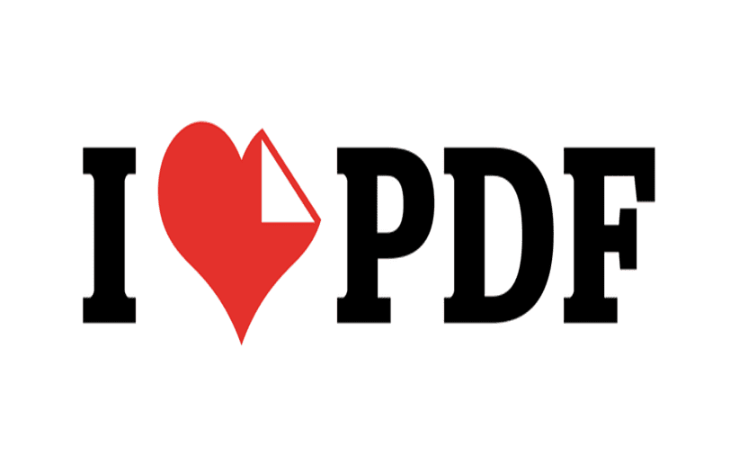

Полностью бесплатные онлайн-инструменты для объединения, разделения, сжатия PDF-файлов, преобразования документов Office в PDF-файлы, преобразования PDF-файлов в JPG и JPG в PDF. Без необходимости установки.
Команда iLovePDF существует для простого управления документами. Из собственного опыта мы знаем, что работа с PDF-файлами может занимать очень много времени. Разве не лучше проводить его за интересными занятиями, вместо того, чтобы страдать над PDF?
С момента создания офиса в Барселоне в 2010 году, нашей целью всегда было предоставление бесплатных, доступных и качественных услуг, которыми легко пользоваться. Наш проект, который возник для удовлетворения собственных потребностей, тепер стал одним из самых посещаемых международным сообществом PDF-сайтов мира. Возможность быть полезными миллионам людей делает нас счастливыми.